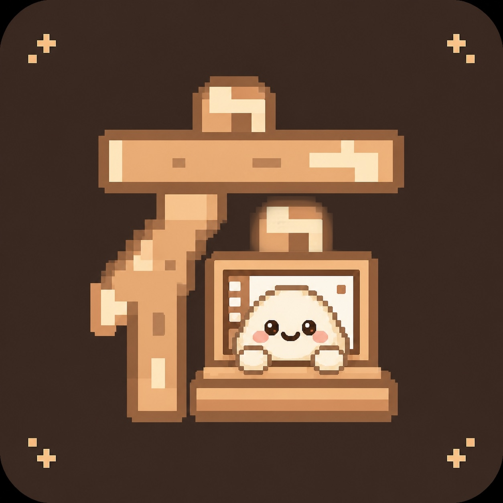
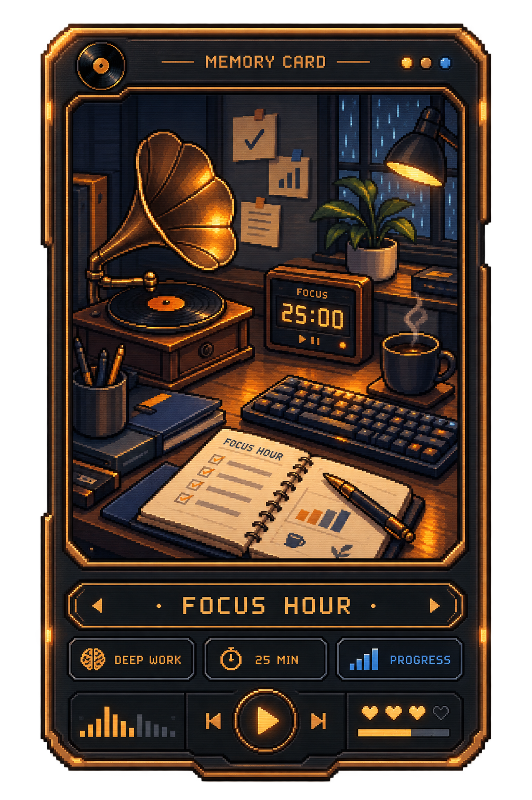
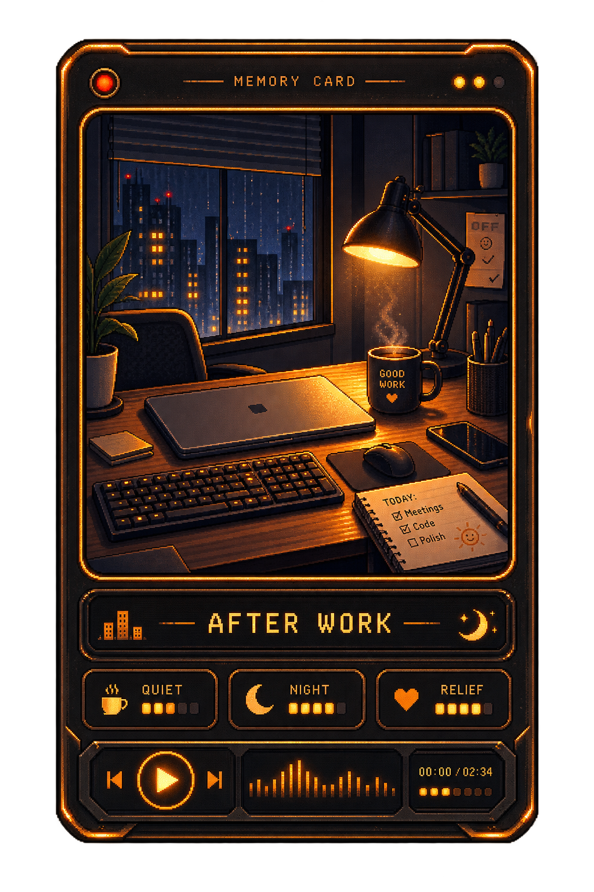
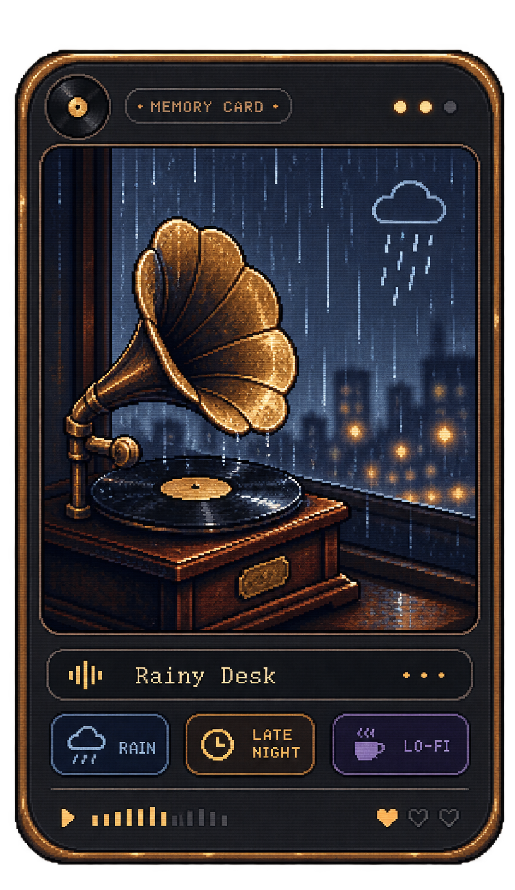

01SCENE
FOCUS
像素小屋
一处常驻桌面的空间。场景、光线、环境声和桌宠分开生长，给每一段活动一个安静的背景。

在场 ZAICHANG / PRESENCE GitHubGHA QUIET COMPANION SPACE
《在场》把专注、同桌、留声和回忆收进一间安静的小屋。它不替你聊天，也不替你生活，只让共同度过的时间有一个可以回来的地方。
SCROLL TO EXPLORE不是另一个聊天工具
我们常常和重要的人相隔很远：各自上课、工作、读书，偶尔想起对方，却不想把每一次想念都变成即时回复的压力。《在场》从这个缝隙里开始，把“我还在”变成一盏灯、一段声音、一张可以留存的卡片。
02 / EXPERIENCE
从今天要做的事开始，在一段时间里和另一个人同频，最后把值得记住的部分交给回忆。
一处常驻桌面的空间。场景、光线、环境声和桌宠分开生长，给每一段活动一个安静的背景。
专注、创作、行动或出走。选择一个节奏，让 AI 只在合适的时机给出轻量、可关闭的建议。
通过邀请码进入同一间房间，各自学习或工作，不需要持续聊天，也能知道对方还在。
把一段文字或声音留给未来。用户确认之后，它才会在约定的时机亮起，成为一件可以等待的物件。
PRODUCT LOGIC
把复杂的事情藏到系统里，把决定权留给使用它的人。
桌面窗口、像素场景与跨设备的界面层。
录音、试听与留声机的本地声音体验。
在本地保存设置、场景和可替换的资源。
AI 负责整理和建议，发送与保存始终由人确认。
04 / SHOWCASE
从真实的应用场景里，慢慢长出自己的质感。



DEMO REEL
一段关于像素小屋、桌宠和同频在场的演示。
《在场》仍在生长中。每一个场景、每一张卡片和每一次等待，都是一次对“共同生活”更温柔的尝试。